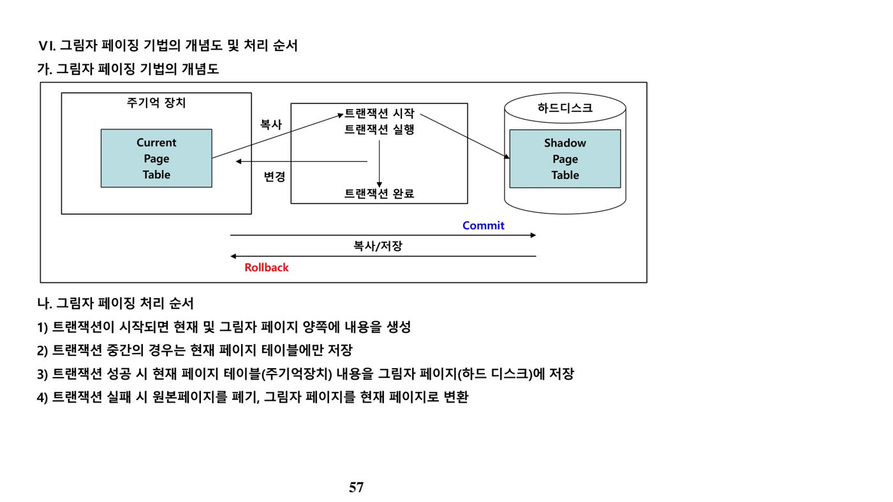
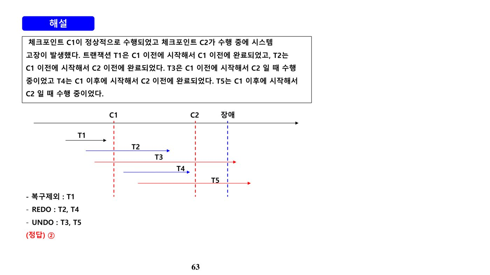

1. 트랜잭션의 개념과 ACID 특성 (원본 p.2-7)
가. 트랜잭션의 ACID 특성
트랜잭션(Transaction)은 데이터베이스의 상태를 변화시키는 하나의 논리적 작업 단위로, 아래 4가지 특성(ACID)을 보장해야 한다.
| 특성 | 주요 개념 |
|---|---|
| 원자성(Atomicity) | 트랜잭션의 처리가 완전히 끝나지 않았을 경우에는 전혀 이루어지지 않은 것과 같아야 함(All or Nothing). 관련 연산: Commit / Rollback |
| 일관성(Consistency) | 트랜잭션이 실행을 성공적으로 완료하면 데이터베이스는 모순이 없어 일관성이 보존된 상태여야 함 |
| 고립성(Isolation) | 어떤 트랜잭션도 다른 트랜잭션의 부분적 실행 결과를 볼 수 없음 |
| 지속성(Durability) | 트랜잭션이 일단 성공적으로 완료되면 그 결과는 영구적으로 보장되어야 함 |
ACID 4대 특성 중 원자성과 지속성은 회복 관리자(Recovery Manager)가 책임지고 보장하는 특성이다. 일관성은 무결성 관리자와 동시성 제어 관리자가, 고립성은 동시성 제어 관리자가 함께 관여한다는 점에서, "회복 관리자가 보장하는 특성은?"이라는 질문에는 원자성·지속성만 해당된다.
나. 트랜잭션의 상태 전이
| 상태 | 내용 |
|---|---|
| 실행(Active) | Begin Trans로부터 실행을 시작했거나 실행 중인 상태 |
| 부분 완료(Partially Committed) | 트랜잭션이 마지막 명령을 실행한 후의 상태 |
| 실패(Failed) | 정상적 실행을 더 이상 행할 수 없음이 발견된 후의 상태 |
| 철회(Abort) | 트랜잭션이 복원되어 트랜잭션 수행 이전 상태로 환원된 후의 상태 |
| 완료(Committed) | 트랜잭션이 성공적으로 완료된 상태 |
여러 트랜잭션이 동시에 수행되더라도 각기 개별로 수행되는 것과 동일해야 한다는 성질은 고립성(Isolation)이며, 트랜잭션 내의 모든 데이터베이스 연산이 수행 완료되거나 아무 연산도 수행되지 않음을 보장하는 특성은 원자성(Atomicity)이다. "독립성(Independency)"이라는 용어는 ACID 4대 특성의 정식 명칭이 아니라 "고립성(Isolation)"과 혼동을 유발하기 위한 함정 표현으로 자주 등장한다.
2. 트랜잭션 직렬화와 격리 수준 (원본 p.8-25)
가. 병행 수행 시 발생하는 이상현상(Read 이상)
| 유형 | 내용 |
|---|---|
| Dirty Read(오손 데이터 읽기) | Commit되지 않은(다른 트랜잭션이 아직 완료하지 않은) 데이터를 읽을 수 있음 |
| Non-Repeatable Read(반복불가능 읽기) | Commit된 데이터만 읽지만, 최초 읽은 값과 다시 읽었을 때의 값이 다를 수 있음 |
| Phantom Read(팬텀 읽기) | 특정 범위 값을 읽고 나서 다시 읽었을 때, 처음에는 없었던 새로운 행을 읽을 수 있음 |
나. SQL-92의 4단계 격리 수준(Isolation Level)
| 유형 | 설명 |
|---|---|
| Read Uncommitted(Level 0) | SELECT 수행 시 해당 데이터에 Shared Lock이 걸리지 않는 수준. 다른 사용자가 아직 완료(Commit)하지 않은(Dirty) 데이터도 읽을 수 있음 |
| Read Committed(Level 1) | 대부분 DBMS의 Default 수준. 다른 사용자가 완료(Committed)한 데이터만 읽음(DBMS별로 Shared Lock 여부는 다를 수 있음) |
| Repeatable Read(Level 2) | 트랜잭션이 완료될 때까지 SELECT가 사용하는 모든 데이터에 Shared Lock이 걸려, 같은 범위를 다시 읽어도 값이 유지됨(수정 불가). 다만 범위 밖에 새 값이 INSERT되는 것은 막지 못해 Phantom Read는 가능 |
| Serializable(Level 3) | Repeatable Read 수준에서 범위(Range)에 대한 Shared Lock까지 추가해, 범위 내 INSERT도 허용하지 않음 → Phantom Read까지 방지 |
| 격리 수준 | Dirty Read | Non-Repeatable Read | Phantom Read |
|---|---|---|---|
| Read Uncommitted(Level 0) | 가능 | 가능 | 가능 |
| Read Committed(Level 1) | 불가능 | 가능 | 가능 |
| Repeatable Read(Level 2) | 불가능 | 불가능 | 가능 |
| Serializable(Level 3) | 불가능 | 불가능 | 불가능 |
격리 수준이 낮을수록(Read Uncommitted에 가까울수록) 고립 수준은 낮고 동시성 수준(성능)은 높으며, 격리 수준이 높을수록(Serializable에 가까울수록) 고립 수준은 높고 동시성 수준은 낮아지는 트레이드오프 관계다. "LOCKING 기법을 사용할 경우 가장 낮은 수준(Read Uncommitted)에서도 발생하지 않는 현상"을 묻는다면, 표에서 Read Uncommitted 행에 유일하게 "불가능"이 없다는 점에 착안하기보다, LOCKING 자체를 사용하는 이상 갱신 손실(Lost Update)은 방지된다는 것이 정답 논리다.
다. 트랜잭션 스케줄과 직렬 가능성
직렬성을 가진 트랜잭션 스케줄이란, 각 트랜잭션이 동시에 수행되더라도 그 결과가 순차적으로 트랜잭션이 수행된 결과와 같은 경우(스케줄 동치)를 말한다. 충돌 직렬 스케줄이 더 엄격한 기준이므로 모든 충돌 직렬 스케줄은 뷰 직렬 스케줄에 포함되지만 그 역은 성립하지 않는다(충돌 직렬 ⊂ 뷰 직렬).
| 구분 | 판단 기준 |
|---|---|
| 충돌 직렬 가능성(Conflict Serializability) | 동일 데이터 Q에 대해 서로 다른 트랜잭션의 연속 연산 Ii, Ij 중 read-read를 제외한(즉 read-write, write-read, write-write) 조합이 하나라도 있으면 "충돌"이며, 이 충돌들이 순환(Cycle)을 이루면 충돌 직렬 불가능 |
| 뷰 직렬 가능성(View Serializability) | 스케줄 S와 순차 스케줄 S′를 비교해 동일 데이터 Q에 대한 '초기값 읽기', '쓰기 후 읽기', '마지막 쓰기' 순서가 서로 같다면 뷰 직렬 가능 |
예를 들어 T1의 read(A)와 T2의 read(A)처럼 read-read 조합은 순서를 바꿔도 결과에 영향이 없어 충돌이 아니지만, T1의 write(A)와 T2의 read(A)처럼 하나라도 write가 섞이면 순서를 바꿀 수 없는 충돌 관계가 된다. 서로 다른 데이터 항목(A와 B)에 대한 연산은 애초에 충돌 대상이 아니므로 순서를 자유롭게 바꿀 수 있다.
3. 동시성 제어 (원본 p.26-50)
가. 동시성 제어의 정의와 목적, 이상현상
동시성 제어(Concurrency Control)는 다중 사용자 환경을 지원하는 데이터베이스 시스템에서 여러 트랜잭션이 성공적으로 동시에 실행될 수 있도록 지원하는 기능으로, 직렬 가능 스케줄(Serializable Schedule)의 생성 또는 트랜잭션들의 직렬 가능성 보장, 공유도 최대·응답시간 최소화, 데이터 무결성·일관성 보장을 목적으로 한다.
| 구분 | 내용 |
|---|---|
| 갱신 손실(Lost Update) | 동일 데이터를 동시에 갱신할 때, 이전 트랜잭션이 갱신 후 종료하기 전에 나중 트랜잭션이 갱신 값을 덮어쓰는 경우 |
| 오손 데이터 읽기(Dirty Read) | 트랜잭션의 중간(미완료) 수행 결과를 다른 트랜잭션이 참조함으로써 발생하는 오류 |
| 모순성(Inconsistency) | 두 트랜잭션이 동시에 실행할 때 데이터베이스가 일관성이 없는 상태로 남는 문제 |
| 연쇄 복귀(Cascading Rollback) | 복수 트랜잭션이 데이터 공유 시 특정 트랜잭션이 처리를 취소하면 이미 그 값을 읽은 다른 트랜잭션도 연쇄적으로 취소해야 하는 문제 |
| 반복할 수 없는 읽기(Unrepeatable Read) | 한 트랜잭션 내에서 같은 질의를 두 번 수행했는데 그 사이 다른 트랜잭션이 값을 수정·삭제해 결과가 다르게 나타나는 현상 |
나. 동시성 제어 기법 3가지
| 구분 | 2PL(2 Phase Locking) | Timestamp Ordering | 낙관적 검증기법 |
|---|---|---|---|
| 작동 방식 | 확장단계에서는 Lock만, 수축단계에서는 Unlock만 수행 가능 | 시스템 시계 또는 논리적 계수기로 트랜잭션 발생 시마다 타임스탬프 부여 | 트랜잭션 수행 중에는 데이터의 지역 사본에만 갱신하고, 종료 시 직렬화 검증 후 일시에 DB에 반영 |
| 장점 | 직렬가능성 보장을 위해 가장 많이 사용됨 | 트랜잭션이 결코 기다리지 않아 교착상태(Deadlock) 방지 가능 | 종료 시 동시성 검증만 하면 되어 동작이 비교적 단순 |
| 단점 | 교착상태 발생 가능(예방·탐지로 해결) | 연쇄복귀(Cascading Rollback)를 초래할 수 있음 | 트랜잭션이 몰릴 경우 동시성 검증으로 인한 성능저하 가능 |
| 응용 | 휴대용 단말용 플래시 메모리 2PL | 웹시스템 OLTP 제어용 | 업무 구분이 명확해 중복이 없는 트랜잭션 |
낙관적 동시성 제어(Optimistic Concurrency Control)는 읽기 단계(Read Phase) → 검증 단계(Validation Phase) → 쓰기 단계(Write Phase) 순으로 진행된다. 읽기 단계는 지역 변수만 이용해 읽기·갱신을 수행하고, 검증 단계는 실제 DB 반영 전 충돌 직렬 가능성을 검사하며, 쓰기 단계는 검증을 통과하면 실제 반영하고 그렇지 않으면 트랜잭션을 취소·재시작한다.
다. 2단계 로킹(2PL)과 잠금(Lock)의 종류
2단계 로킹 규약(Two-Phase Locking)은 1단계(확장, Growing Phase)에서 Lock만 수행하고 Unlock은 할 수 없으며, 2단계(수축, Shrinking Phase)에서는 Unlock만 수행하고 Lock은 할 수 없다는 규약으로, 이를 준수하면 직렬 가능성이 보장된다.
| 2PL 변형 | 설명 |
|---|---|
| Strict(엄격한) 2PL | 배타적 Lock에 대해 트랜잭션이 완료·철회될 때까지 Unlock하지 않는 방식. 교착상태(Deadlock) 발생 가능 |
| Rigorous(엄중한) 2PL | 배타적 Lock뿐 아니라 공유 Lock까지 트랜잭션 완료·철회 시까지 Unlock하지 않는 방식. 모든 트랜잭션을 완료 순서로 직렬화 가능하지만 Strict 2PL보다 덜 제한적 |
| Static(고정된/보수적) 2PL | 트랜잭션 수행 전부터 read set·write set을 미리 선언해 수행 전 모든 항목을 Lock — 교착상태를 방지할 수 있으나 보수적 2PL이 "교착상태가 발생하지 않는다"는 설명은 오답이며, 실제로는 현실 적용에 한계가 있고 교착상태가 발생할 수 있다 |
로크 전환(변환)에서 read_lock(공유 로크)에서 write_lock(배타적 로크)으로 바꾸는 것이 "상승(Upgrade)"이고, 그 반대로 배타적 로크에서 공유 로크로 바꾸는 것이 "하강(Downgrade)"이다. 로킹의 단위(Granularity)가 커질수록 잠금·해제 오버헤드는 줄지만 동시성 수준은 낮아지고 제어는 오히려 단순해진다(동시성 수준이 "높아진다"는 설명은 오답).
| 잠금 종류 | 설명 |
|---|---|
| 공유 잠금(Shared Lock) | 가장 낮은 강도의 잠금. 일반적으로 SELECT 시 발생하며 완료 즉시 해제. 다른 공유 잠금과는 호환되나 배타적 잠금과는 비호환 |
| 배타적 잠금(Exclusive Lock) | 가장 높은 잠금. UPDATE가 행해진 시점부터 트랜잭션이 Commit될 때까지 유지 |
| 업데이트 잠금(Update Lock) | 공유·배타적 잠금의 중간 — 공유 잠금과는 호환되나 다른 업데이트·배타적 잠금과는 비호환 |
| 의도 잠금(IS/IX/SIX) | 계층적(다중 단위) 로킹에서 하위 노드에 걸 잠금의 의도를 상위 노드에 미리 표시(IS=의도-공유, IX=의도-배타적, SIX=공유-의도-배타적) |
라. 타임스탬프 순서(Timestamp Ordering) 기법
타임스탬프 기법은 트랜잭션 Ti가 read(x)·write(x)를 수행할 때 read_TS(x)·write_TS(x)(각각 해당 연산을 성공 수행한 트랜잭션들의 타임스탬프 중 최댓값)와 TS(Ti)를 비교해 연산의 허용·거부·무시 여부를 결정한다.
| 연산 | 조건 | 처리 |
|---|---|---|
| Ti가 Read(x) 수행 | TS(Ti) < write_TS(x) | read(x) 거부, Ti는 복귀(철회) |
| TS(Ti) ≥ write_TS(x) | read(x) 허용, read_TS(x) ← max(read_TS(x), TS(Ti)) | |
| Ti가 Write(x) 수행 | TS(Ti) < read_TS(x) | write(x) 거부, Ti는 복귀 |
| TS(Ti) ≥ read_TS(x)이고 TS(Ti) < write_TS(x) | 토마스(Thomas)의 기록 규칙 적용 시 write(x)를 단순히 무시(Ignore) | |
| 그 외의 경우 | write(x) 허용, write_TS(x) ← TS(Ti) |
토마스(Thomas)의 기록 규칙은 "이미 더 최신 타임스탬프의 트랜잭션이 값을 읽었지만, 아직 그보다 더 최신 값을 write한 트랜잭션은 없는" 특수한 경우에 오래된 write를 거부하지 않고 그냥 무시함으로써 불필요한 트랜잭션 철회를 줄이는 최적화 기법이다.
4. 회복 기법 (원본 p.51-69)
가. 장애(Failure)의 유형
| 유형 | 주요 내용 |
|---|---|
| 트랜잭션 장애 | 논리적 오류(내부 오류로 완료 불가) 또는 시스템 오류(Deadlock 등으로 활성 트랜잭션 강제 종료) |
| 시스템 장애 | 전원·하드웨어·소프트웨어 등의 고장. 저장 내용이 영향받지 않도록 무결성 체크 필요 |
| 디스크 장애 | 디스크 스토리지 일부 또는 전체 붕괴. 가장 최근 덤프와 로그를 이용해 덤프 이후 완결된 트랜잭션을 재실행 |
나. REDO와 UNDO
| 구분 | 내용 |
|---|---|
| REDO(재수행) | 아카이브 사본 + 로그(Log) → 완료(Commit) 후 상태. DB 내용 자체가 손상된 경우 최근 복사본을 적재한 후 로그를 재실행해 복원. 장애 발생 시점에 이미 완료된 트랜잭션에 대해 수행하며, 쓰기 연산을 재실행해 값을 디스크에 저장(Forward Recovery) |
| UNDO(취소) | 로그(Log) + 후방향(Backward) 취소 연산 → 시작 상태. DB 내용은 손상되지 않았지만 변경 중이거나 신뢰성을 잃은 경우 로그로 변경을 모두 취소. 장애 발생 시점에 진행 중이던(미완료) 트랜잭션에 대해 수행하며, 쓰기 연산을 취소해 이전 값으로 되돌림(Backward Recovery) |
다. 회복 기법의 종류
| 구분 | 개념 | 특징 | 복구속도 |
|---|---|---|---|
| 로그 기반 기법 | 로그파일을 이용 | REDO·UNDO 결정을 위해 로그 전체를 조사해야 하므로 시간 지연 발생 | 느림 |
| 검사점(Checkpoint) 기법 | 로그파일과 검사점 이용 | 로그 기반 대비 상대적으로 속도가 빠름 | 로그 기반보다 빠름 |
| 그림자 페이징(Shadow Paging) 기법 | 그림자 테이블을 이용한 복구 | UNDO 간단, REDO 불필요해 수행 속도가 빠르고 간편하지만 여러 트랜잭션이 병행 수행되면 단독 사용이 어렵고 그림자 페이지 테이블 복사·기록 오버헤드 발생 | 복사·백업본에서 복구하므로 빠름 |
즉시 갱신(Immediate Update) 회복 기법은 트랜잭션 수행 중 갱신 결과를 DB에 즉시 반영하고 로그를 기록하며, 트랜잭션 실패 시 로그 기반 UNDO로 회복한다. 반면 지연 갱신(Deferred Update) 회복 기법은 트랜잭션이 부분 완료될 때까지 DB의 실제 갱신을 지연시키며, UNDO가 아니라 REDO 알고리즘만으로 회복한다(트랜잭션이 종료된 상태면 UNDO 없이 REDO만 실행, 종료가 안 된 상태였다면 로그 정보 자체를 무시). 그림자 페이지 회복 기법은 REDO 연산이 필요 없어 장애로부터의 회복 작업이 신속하다는 장점이 있다.
라. 검사점(Checkpoint) 회복 기법
검사점 회복 기법은 로그 기반 기법의 "로그 전체를 처음부터 조사해야 하는" 비효율을 개선하기 위해, 일정 시점(Checkpoint)마다 현재 상태를 기록해 두고 장애 발생 시 가장 최근 검사점 이후의 트랜잭션만 회복 대상으로 삼는 기법이다.

- 트랜잭션 수행 중 문제가 발생하면 로그파일의 정보를 검사해 Redo·Undo를 실행할 트랜잭션과 체크포인트를 선정
- 검사점의 로그 파일 기록을 이용해 실행
- 장애 발생 시 검사점 이전에 이미 처리(완료)된 트랜잭션은 회복 대상에서 제외
- 검사점 이후에 처리된 트랜잭션만 회복 작업 수행 — 검사점 이후 시작해 장애 이전 완료된 트랜잭션은 REDO 대상, 검사점 이전/이후 시작했지만 장애 시점까지 미완료인 트랜잭션은 UNDO 대상

예를 들어 체크포인트 C1이 정상 수행되고 C2 수행 중 장애가 발생했을 때, C1 이전에 시작해 C1 이전에 완료된 트랜잭션(T1)은 회복 작업과 무관하고, C1 이전(또는 이후)에 시작해 C2 이전에 완료된 트랜잭션(T2, T4)은 REDO 대상, C2 시점까지 수행 중이던 트랜잭션(T3, T5)은 UNDO 대상이 된다. UNDO 대상 트랜잭션은 로그에 기록된 순서의 역순으로 Undo 연산을 수행해야 한다는 점에도 유의한다(기록된 순서 그대로 수행한다는 설명은 오답).
📚 전체 기출·예상문제 (20문항) — 원문 수록
본 강좌 원본 PDF에 수록된 기출·예상문제를 빠짐없이 원문 그대로 정리했습니다. 정답·해설은 강의 원문 기준입니다.